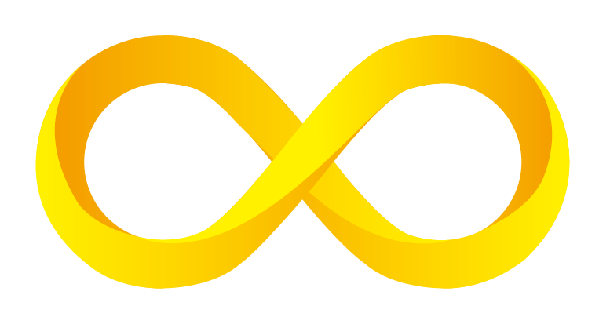
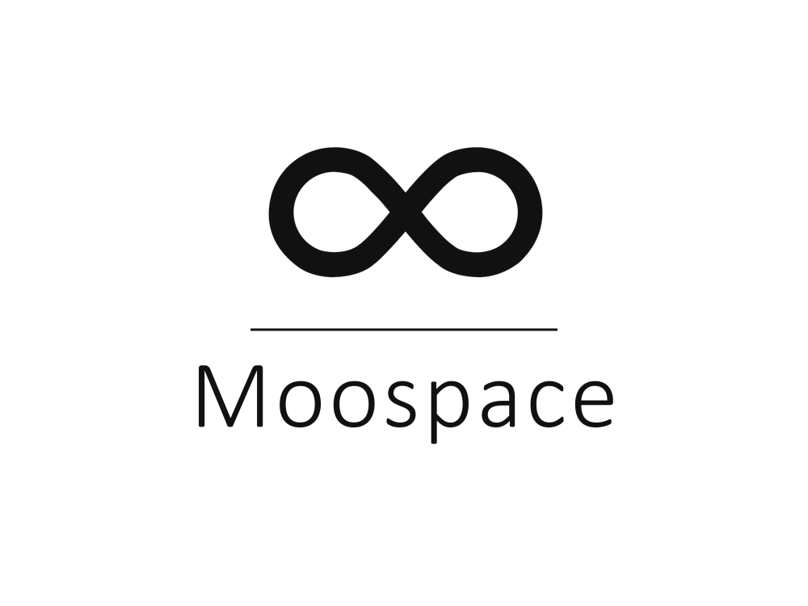
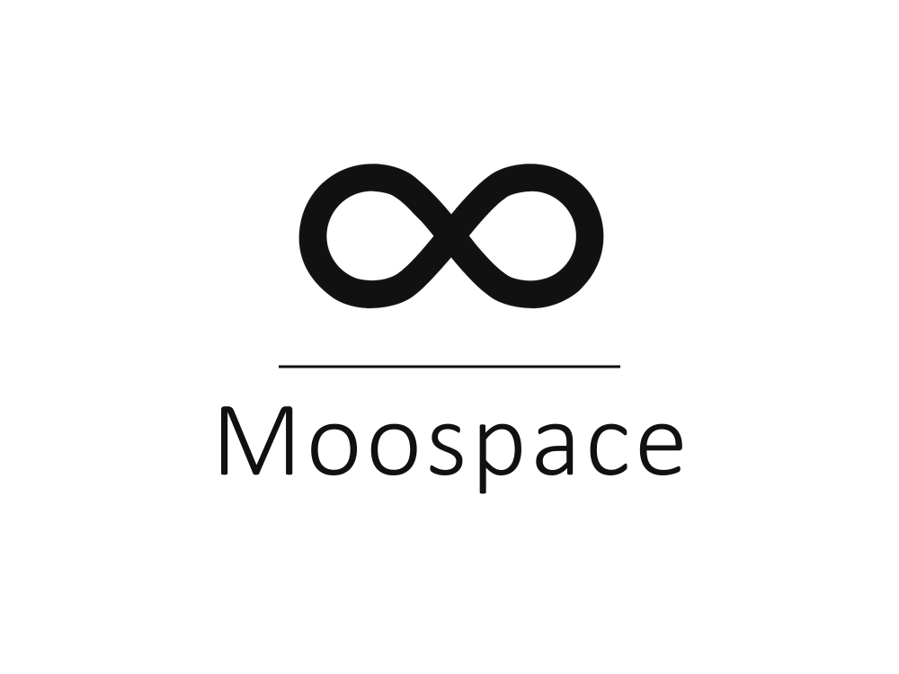

深靛藍 Deep Indigo
- HEX
- #16163F
- RGB
- 22 / 22 / 63
- CMYK
- 90 / 88 / 40 / 55
- PANTONE
- 2767 C
品牌底色，用於深色背景、導航與情境氛圍。

Live as a fully conscious being
Moospace 品牌識別設計規範
這份文件是 Moospace 沐空間的品牌識別設計規範，提供給合作的設計師、攝影師、內容夥伴參考。請依照這裡的規則進行任何視覺應用，以確保品牌調性一致。
Brand Essence
一起回歸內心的真實
Live as a fully conscious being
靈魂來到世間，為了體驗更大的自己，成為本然的自己。Moospace 陪伴每個人透過療癒、自然與覺察，走回屬於自己的中心。
尋找身心靈平衡、對療癒與自我探索感興趣的成人族群。語氣應溫柔、真誠、不帶壓迫感，引導而非說服。
讓每個靈魂在回歸內心的路上，有一片溫柔的空間同行。
成為華人身心靈領域中，最被信任的療癒陪伴者。
Logo Guidelines
主要版本（彩色 Color）

單色黑版本（亮底使用）

反白版本（暗底使用）
Logo 四周請預留至少一個「Moo」字高度的空白區域，避免其他元素侵入視覺區。
為確保辨識度，數位使用最小寬度 120px，印刷使用最小寬度 30mm。小於此尺寸請使用無限符號單獨版本。
以「Moo」字高為基本單位 X。無限符號寬度為 3X、高度約 1.67X（比例 1.8:1），字與符號之間的間距為 1X，文字字距 letter-spacing 為 0.5X。所有比例以此為準，不可自行調整間距或大小。
不要變形拉長
不要使用品牌色以外的顏色
不要加陰影或立體效果
不要任意旋轉
不要放在複雜背景上
不要降低 Logo 透明度
Color System
品牌底色，用於深色背景、導航與情境氛圍。
Logo 主色，用於標誌與強調元素。不可作為大面積背景。
次要強調色，用於 CTA 按鈕、分隔線、細節裝飾。
文字主色，白底上的標題與內文。
暖白 Off White
淺灰 Light Gray
中灰 Mid Gray
夜紫 Night Plum
60% 中性背景 + 25% 深靛藍主色 + 10% 柔金棕輔色 + 5% 品牌金點綴。避免多色並置，保持視覺呼吸。
linear-gradient(135deg, #0E0E2A 0%, #16163F 55%, #211F40 100%)
主 hero 背景、podcast 封面、情境氛圍的深色場合。
linear-gradient(90deg, #F5C843 0%, #D3B574 100%)
點綴強調、CTA 按鈕懸浮狀態、儀式感細節。
radial-gradient + linear-gradient (neutral)
白底內頁的柔性背景、vision board、靜謐卡片。
Typography
中文主字型
一起回歸內心的真實
在靜謐中覺察，在自然中療癒。
靈魂來到世間，為了體驗更大的自己。
Aa Bb Cc 永和空間 0123456789
用於所有中文標題、內文、按鈕。Weight 300 / 400 / 500 / 700。
中文標題用
回歸本然
靈魂的靜默，是最深的回家。
Aa Bb Cc 永和空間 0123456789
用於大標、引言、具儀式感的場合。不建議用於長段內文。
英文標題
Live as a fully
conscious being
Return to your inner truth.
Moospace · Healing Space
用於英文大標題與品牌口號。Weight 300 為主視覺調性。
英文內文
Heal · Ground · Align
A space where you meet your true self, softly.
Aa Bb Cc 0123456789
用於英文副標、按鈕、長段內文。Weight 200–500。
副標 Kicker · 14px · Montserrat 500 · Uppercase
內文 Body · 16px · Noto Sans TC 400 · line-height 1.8。用溫和的語調，陪伴讀者走進故事，避免過度說服或行銷語氣。
註解 Caption · 13px · Noto Sans TC 300
Tone of Voice
Moospace 說話的方式，像一杯溫熱的水。不催促、不教導、不販賣焦慮。它只是靜靜地在那裡，等你準備好時，接住你。
柔軟不等於模糊。說出真實的事，但用不傷人的方式。
我們不宣稱答案。我們邀請對方看見自己的答案。
不把句子塞滿。語言也要有呼吸。一句簡單的話，比十句解釋更有力量。
允許脆弱、停頓、不知所措。完美的話語常常離人很遠。
✓ 這樣說
✗ 不這樣說
【限時優惠】現在下單 Moospace 療癒課程，立刻擁有全新自己！名額僅剩 3 位，錯過再等一年！
Moospace 療癒課程 — 是一段回到自己的旅程。當你準備好，它會在那裡等你。
中文負責情感與詩意，英文負責簡潔與國際感。標語可雙語並列，但不強行直譯：讓兩種語言各自完整，彼此呼應，而非翻譯對照。
Photography Style
目前尚未累積自有攝影資產，合作設計師可使用以下 AI prompt 作為風格參考，生成符合品牌調性的情境圖。未來產出的實拍素材也應依循相同準則。
01 · Morning
Soft morning light through sheer linen curtains, a single amethyst crystal resting on a pale oak side table, muted earthy palette, shallow depth of field, subtle film grain, Mamiya 645 look, Fujichrome 400H aesthetic, warm ivory tones, no people, minimal composition.
02 · Ritual
Close-up of two bare hands gently holding a clear quartz crystal, natural daylight from the left, soft shadow on linen cloth, neutral background, no visible jewelry or nail polish, muted peach and cream tones, 50mm f/1.8, film-like texture, slightly desaturated.
03 · Nature
A quiet forest clearing at golden hour, soft mist rising from moss-covered stones, warm amber light filtering through leaves, low angle shot, slight film grain, muted and cinematic, Kodak Portra 400, 35mm, no subjects.
04 · Water
Still surface of a deep blue lake at dawn, a single ripple at the center, very soft ambient light, minimalist composition, deep indigo with warm gold highlights on the far shore, ethereal, painterly, slightly underexposed, tranquil.
05 · Meditation
Silhouette of a seated figure facing a large window, soft natural backlighting, no facial features visible, calm room with plant shadows on the wall, muted earthy palette, cinematic mood, 85mm, shallow focus, peaceful.
06 · Crystals
Overhead flat lay, three crystals arranged asymmetrically on a wrinkled linen cloth, soft diffused daylight with venetian blind shadows, cream and warm ochre palette, subtle film grain, Pentax 67 aesthetic, contemplative stillness.
Iconography
線條柔軟、節奏呼吸。每一枚圖示都是一個安靜的隱喻。主題圍繞療癒、自然、水、晶石、冥想。
Pattern & Texture
輔助視覺應如呼吸般存在——不搶走主角，卻讓畫面有溫度。以下六款紋理均來自品牌的五個主題意象：水、能量、礦石、光暈、紙質、能量網格。
重複的水波線，代表頻率與情緒。用於冥想、podcast、課程頁面底部裝飾。
能量場的視覺化。用於 logo 底層光暈、冥想 CTA、品牌故事起點。
細線網格，代表理性與結構。深色背景上的點陣，襯托儀式感。
柔金棕與品牌金的放射光暈，代表能量流動。常用於 hero、封面背景。
米白紙紋材質，帶來溫度感與手感。名片、包裝、小卡的底色首選。
低彩度的礦石紋理，代表療癒晶石的質地。用於產品頁、課程封面的局部點綴。
Motion Identity
Moospace 的動態像一次呼吸：慢慢進、慢慢出，不催促、不戲劇。緩動曲線、節奏、時長，都以「身體能放鬆跟著動」為準。
scale 1 → 1.06 → 1
∞ 標誌的基本動作。4 秒一輪，模擬四拍吸氣、四拍吐氣。
translateY(0 → -8px → 0)
Hero 標誌與重要圖示的環境動作。6 秒一輪，幅度極小。
scale 1 → 2.2 · opacity 0.6 → 0
點擊、通知、釋放能量的回饋。只在使用者觸發後一次性播放。
translateY(20 → 0) · opacity 0 → 1
內容進場的預設方式。400ms，配合 stagger 80ms 分次浮現。
cubic-bezier(.2,.7,.3,1)主要進場／UI 狀態變化cubic-bezier(.4,0,.2,1)穩定沉落、尾端收束ease-in-out呼吸、漂浮等環境動作Applications
MOOSPACE
覺察日常
療癒晶石
Healing Crystals
陳沐空
療癒師 Healer
service@moospace.tw
Downloads
合作夥伴可直接下載以下原始素材。若需要其他格式（EPS、SVG 向量版），請聯絡我們。
{kind=link}
{kind=link}
{kind=link}
社群版型
Social Templates
Instagram 是 Moospace 與使用者最靠近的地方。版型以留白、一句話、柔光為核心，避免過多資訊壓縮讀者的呼吸。
「當你安靜下來，世界也會靜下來。」
TODAY
回到呼吸，
回到自己。
EP.02
你不需要
成為誰
a conversation with yourself
停下來，
也是前進的一種。
— Moospace
版型規則